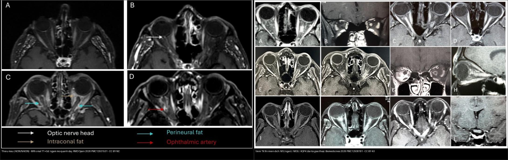
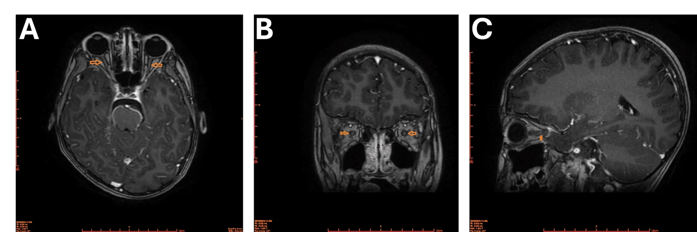
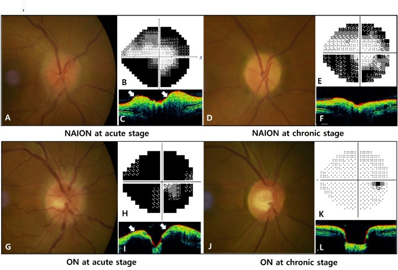
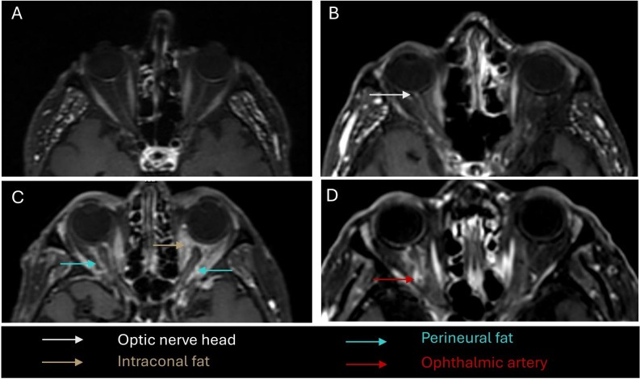
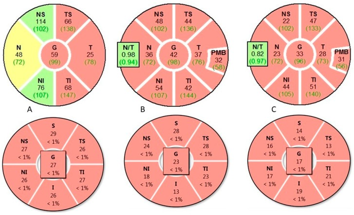

430 — Đường thị giác: viêm vs thiếu máu vs chèn ép / Optic neuritis vs NAION
Tags: pattern:viem-TK-thi vung:than-kinh-thi score:GCL protocol:MRI-hoc-mat protocol:OCT-thi-truong
Mức chắc chắn (certainty): tổng hợp y văn (literature synthesis) — nhóm tự biên từ y văn mở (Biomedicines 2026 CC BY + BMC Ophthalmol 2026 CC BY-NC-ND + RMD Open 2026 CC BY-NC + Cureus 2026 CC BY), chưa gắn ca nguyên văn đơn lẻ.
1. Tổng quan — đau khi đảo mắt + 3 hội chứng kháng thể
- Viêm TK thị (optic neuritis, ON) là một nhóm bệnh sinh học khác nhau, không phải một bệnh: phân biệt bằng chiều dài tổn thương MRI + mẫu tổn thương võng mạc trên OCT + kháng thể. Từ ONTT (1992) đến nay, paradigm đã chuyển từ "ON = MS" sang ON do kháng thể (AQP4-ON, MOG-ON, thể âm tính kép).
- Viêm TK thị điển hình (MS-ON): đau khi đảo mắt + giảm thị lực 1 bên + ám điểm trung tâm; MRI đoạn ngấm NGẮN (< 1/2 chiều dài TK, thường < 10–15 mm) + OCB dịch não tủy (+); đáp ứng steroid TM liều cao và thường hồi phục tốt.
- NMOSD (AQP4+): tổn thương DÀI (≥ 1/2 chiều dài, tới giao thoa), 2 bên, kèm tủy dài (LETM) + area postrema (nôn, nấc); tiên lượng nặng — mất GCL sớm và nặng nhất trong 3 nhóm, tái phát, cần rituximab dự phòng.
- MOGAD: 2 bên + phù đĩa + viêm quanh bao (perineural), trẻ; bảo tồn GCL tương đối tốt hơn AQP4; đáp ứng tốt, cần theo dõi tái phát.
- NAION (thiếu máu, không viêm): > 50 tuổi + yếu tố mạch máu + KHÔNG đau + phù đĩa + tỉnh dậy đã mờ; chiếm ~90% ca AION, không steroid.
- AION do GCA (A-AION): cấp cứu mù — nhợt trắng phấn + đau hàm + 2 bên; MRI ổ mắt giúp phân biệt nhanh (bài 435).
- Ngưỡng định lượng nằm lòng:
- Chiều dài đoạn ngấm: MS-ON ngắn (< 1/2 chiều dài TK) vs AQP4-ON dài (≥ 1/2, tới giao thoa) vs MOG-ON quanh bao/nhiều mô hốc mắt.
- NAION vs ON — phù đĩa không phân biệt được bằng tốc độ: thời gian phù NAION 1,5 ± 0,6 tháng vs ON 1,3 ± 0,7 tháng; pRNFLT lúc chẩn đoán NAION 215,7 ± 57,6 µm vs ON 199,1 ± 60,4 µm, không khác biệt có ý nghĩa — tốc độ tan phù KHÔNG dùng để phân biệt (BMC Ophthalmol 2026).
- A-AION vs NA-AION trên MRI ổ mắt: ngấm mỡ quanh dây thần kinh (perineural fat) 90,9% vs 22,2% (p = 0,005); ngấm mỡ sau nhãn cầu 100% vs 11,1%; ngấm động mạch mắt 72,7% vs 22,2% (RMD Open 2026) → ngấm lan ra mô mỡ = nghĩ GCA.
- Steroid cấp: methylprednisolone 1 g/ngày × 3–5 ngày; NMOSD kháng steroid → thay huyết tương sớm (5 đợt).
2. Gamut giảm thị lực cấp + TK thị
- Theo triệu chứng chốt: đau khi đảo mắt + hồi phục từng đợt → viêm; không đau + tỉnh dậy đã mờ (> 50 tuổi) → thiếu máu; không đau + tiến triển chậm + mạn → chèn ép.
- Theo MRI chiều dài ngấm: ngắn = MS-ON; dài tới giao thoa = AQP4-ON; quanh bao + phù đĩa + 2 bên = MOG-ON; ngấm mỡ quanh dây/mô hốc mắt = A-AION (GCA).
- Theo OCT: mất GCL sớm–nặng = AQP4-ON; bảo tồn tương đối = MOG-ON; RNFL mỏng thái dương muộn = viêm/DOA/độc chất (bài 434/439).
- Theo cơ chế: khử myelin/miễn dịch (MS, MOGAD) · hoại tử tế bào hình sao (astrocytopathy) (AQP4) · thiếu máu động mạch đốt sống sau/ngắn (NAION, GCA) · chèn ép cơ học (u, dày màng não).
3. Bảng so sánh phân biệt (ma trận đối chiếu)
| Thực thể (entity) | Hình ảnh điển hình (MRI/OCT/đáy mắt) | Chốt vào (rule-in) | Chốt loại (rule-out) | Gợi ý xác nhận |
|---|---|---|---|---|
| MS-ON | Ngấm ngắn, khu trú (axial + coronal), 1 bên; RNFL/GCL mất vừa | Đau khi liếc + đoạn ngắn + trẻ + OCB (+) | Dài + 2 bên + AQP4 (+) → NMOSD | Steroid TM; MRI não (tổn thương Dawson) |
| AQP4-ON (NMOSD) | Ngấm DÀI ≥ 1/2 TK, tới giao thoa, hay 2 bên; kèm LETM + area postrema; mất GCL sớm–nặng nhất | AQP4 (+) + LETM + nôn nấc + 2 bên/dài | Ngắn + OCB (+) đơn thuần → MS | Thay huyết tương sớm + rituximab |
| MOG-ON (MOGAD) | 2 bên + phù đĩa + viêm quanh bao (perineural); bảo tồn GCL tương đối | Phù đĩa + trẻ + 2 bên + đáp ứng tốt + kháng MOG (+) | Không phù đĩa + dài tới giao thoa → NMOSD | Kháng MOG; steroid + theo dõi tái phát |
| NAION (thiếu máu) | Phù đĩa + không ngấm TK; không đau; pRNFLT ~216 µm lúc đầu, tan phù ~1,5 tháng | > 50 tuổi + không đau + đĩa phù + disc-at-risk (C/D nhỏ mắt kia) | Đau + ngấm TK/mỡ → viêm/GCA | Kiểm soát mạch máu; không steroid |
| A-AION (GCA) | Ngấm mỡ quanh dây thần kinh + mỡ sau nhãn cầu + động mạch mắt; đĩa nhợt trắng phấn, 2 bên | GCA: đau hàm + ESR/CRP cao + mỡ quanh dây ngấm (90,9% vs 22,2%) | Ngấm khu trú ngắn, không mỡ quanh dây → NAION/MS | Steroid NGAY (bài 435); sinh thiết động mạch thái dương |
| Chèn ép (u/meningioma) | Khối đè giao thoa/TK + tiến triển chậm; bán manh bít | Không đau + mạn + khối trên MRI | Cấp + đau + ngấm → viêm/mạch | MRI yên/giao thoa có tiêm (bài 431/432) |

Trái: AION/NAION trên MRI ổ mắt T1+Gd — (A) NAION bình thường, (B) ngấm đầu TK thị, (C, D) ngấm mỡ quanh dây + mỡ sau nhãn cầu + động mạch mắt (A-AION/GCA) — RMD Open 2026, PMC12931531 Fig. 2, CC BY-NC 4.0. Phải: viêm TK thị miễn dịch trên MRI T1+Gd — MS ngắn (A, B) / MOG (C–F) / AQP4 dài tới giao thoa — Biomedicines 2026, PMC12938181 Fig. 3, CC BY 4.0. Ảnh ghép letterbox.Quiz composite: che nhãn, hỏi bên nào là bệnh mạch máu (không steroid, trừ khi GCA), bên nào cần kháng thể AQP4/MOG?
Bấm để hiện đáp án
- Bên trái (thiếu máu AION/NAION): ngấm mỡ quanh dây/mỡ sau nhãn cầu → nghĩ GCA (steroid NGAY); nếu chỉ ngấm đầu TK thị hoặc bình thường + không đau → NAION, không steroid.
- Bên phải (viêm miễn dịch): đo chiều dài ngấm để phân nhóm — ngắn = MS-ON, dài tới giao thoa = AQP4-ON, quanh bao/phù đĩa = MOG-ON → xét AQP4 + MOG trước khi chọn điều trị dự phòng.
Vì sao OCT lại "chấm điểm" bệnh sinh ba nhóm viêm
- Vì thân tế bào hạch (GCL) là thân tế bào thần kinh; tế bào hình sao (astrocyte) bị phá (AQP4) làm mất GCL sớm và nặng; còn MOG/khử myelin bảo tồn sợi trục tương đối → GCL mất ít hơn.
- Hệ quả lâm sàng: cùng "viêm TK thị" nhưng AQP4-ON tiên lượng nặng nhất, cần thay huyết tương sớm nếu kháng steroid; MOG-ON cần theo dõi tái phát dù hồi phục tốt.
4. Protocol chụp + phân tầng xử trí
- MRI TK thị (bắt buộc): T1 fat-sat sau tiêm + T2 fat-sat 2 bình diện (axial + coronal), lát mỏng ≤ 2–3 mm; đo chiều dài đoạn ngấm (mm) + tìm ngấm mỡ quanh dây/mô hốc mắt. Kèm MRI não (Dawson — nghi MS) + MRI tủy (LETM ≥ 3 thân đốt — nghi NMOSD).
- OCT: vòng RNFL quanh đĩa + GCL/GCC hoàng điểm — đo µm; mất GCL sớm → gợi AQP4.
- Kháng thể + dịch não tủy: AQP4-IgG (cell-based), MOG-IgG, OCB (hỗ trợ MS).
- Chọc dò khi có phù đĩa 2 bên: đo bề dày vỏ thần kinh thị (ONSD) cách nhãn cầu 3 mm: > 5,5–5,8 mm = tăng áp lực nội sọ (bài 433).
- Xử trí: viêm cấp → methylprednisolone 1 g/ngày × 3–5 ngày; NMOSD kháng → thay huyết tương 5 đợt; NAION → không steroid; A-AION/GCA → steroid liều cao NGAY, không chờ xác nhận (bài 435).
flowchart TD
A[Giam thi luc - nghi TK thi] --> B{Co dau khi dao mat?}
B -->|Co| C[Viem TK thi - MRI TK thi T1+Gd/T2 fat-sat]
B -->|Khong| D{> 50 tuoi + yeu to mach mau + tinh day mo?}
D -->|Co| E[NAION - KHONG steroid; kiem tra dau ham/ESR/CRP]
D -->|Khong| F[Chen ep/man tinh - MRI yen/giao thoa]
C --> G{Chieu dai doan ngam + 2 ben?}
G -->|Ngan < 1/2| H[MS-ON - OCB + MRI nao]
G -->|Dai >= 1/2 toi giao thoa| I[AQP4-ON - AQP4 + MRI tuy LETM]
G -->|Quanh bao + phu dia 2 ben| J[MOG-ON - MOG + theo doi tai phat]
E --> K{Co dau ham + ESR/CRP cao?}
K -->|Co| L[A-AION/GCA - steroid NGAY + MRI mo quanh day]
K -->|Khong| M[NAION kinh dien - kiem soat mach mau]
5. Cạm bẫy
- Đĩa thị bình thường không loại trừ viêm sau nhãn cầu (60–70% NMOSD) — MRI mới quyết định.
- NAION cho steroid vô ích + nguy cơ — phân biệt đau/không đau + ngấm mỡ quanh dây từ đầu.
- Thuốc MS (interferon, fingolimod...) làm nặng NMOSD — chốt AQP4 trước khi điều trị duy trì.
- Tốc độ tan phù đĩa KHÔNG phân biệt NAION vs ON (1,5 ± 0,6 vs 1,3 ± 0,7 tháng; pRNFLT ~216 vs ~199 µm) — nhưng đây vẫn là cơ sở để không hứa phân biệt bằng diễn tiến; dùng đau + MRI.
- Bề dày phù đĩa càng lớn → thời gian phù càng dài ở cả hai bệnh — đừng tưởng phù kéo dài là "chưa lành".
- Đừng quên chèn ép trong teo thị tiến triển chậm không đau (bán manh 2 thái dương → MRI yên/giao thoa).
6. Tự lượng giá — Blind Quiz
Ca 1 — Bé trai nôn nấc 7 ngày + yếu chân + mờ mắt. Đọc MRI TK thị (T1 + Gd), 2 bên:

- Hỏi: ngấm ở đâu? Đĩa thị có phù không? Kèm tủy dài + nôn nấc → hội chứng nào? Kháng thể nào?
Bấm để hiện đáp án (findings + chẩn đoán)
- Dấu hiệu (findings): ngấm TK thị sau nhãn cầu 2 bên, đĩa thị bình thường, kèm tủy dài + area postrema.
- Chẩn đoán (diagnosis): NMOSD AQP4(+) — điều trị steroid TM + thay huyết tương sớm + rituximab dự phòng (khác MS/MOGAD).
- Nguồn ảnh: Espinel-Porras et al., Cureus 2026 (PMC13499930) Fig. 4, CC BY 4.0.
Ca 2 — Ông 65 tuổi tăng HA, tỉnh dậy mờ 1 mắt, KHÔNG đau, đĩa phù. Đáy mắt + thị trường (nửa trên ảnh = NAION):

- Hỏi: viêm hay thiếu máu? Steroid không? Dấu hiệu nào chốt?
Bấm để hiện đáp án (findings + chẩn đoán)
- Dấu hiệu (findings): đĩa phù + khuyết thị trường nửa trên/nửa dưới (altitudinal); pRNFLT lúc đầu ~216 µm, phù tan ~1,5 tháng.
- Chẩn đoán (diagnosis): NAION — vì > 50 tuổi + không đau + yếu tố mạch máu; KHÔNG steroid, kiểm soát mạch máu.
- Chốt: không đau giúp tách khỏi viêm; nếu đau + ngấm mỡ quanh dây → nghĩ GCA/viêm.
- Nguồn ảnh: Moon JW et al., BMC Ophthalmol 2026 (PMC13348820) Fig. 1, CC BY-NC-ND 4.0 (nguyên bản).
Ca 3 — Cụ bà 72 tuổi đau hàm, ESR/CRP cao, mờ mắt 1 bên rồi 2 bên, đĩa nhợt. MRI ổ mắt T1+Gd:

- Hỏi: bên nào nghĩ GCA? Dấu hiệu MRI chốt? Xử trí ngay là gì?
Bấm để hiện đáp án (findings + chẩn đoán)
- Dấu hiệu (findings): ngấm mỡ quanh dây thần kinh thị (perineural fat) + mỡ sau nhãn cầu + động mạch mắt — nhóm A-AION; ca NAION chỉ ngấm đầu TK thị hoặc bình thường.
- Định lượng: mỡ quanh dây 90,9% vs 22,2% (p = 0,005); mỡ sau nhãn cầu 100% vs 11,1%.
- Chẩn đoán/xử trí: A-AION do GCA → steroid liều cao NGAY (không chờ sinh thiết) để cứu mắt kia (bài 435).
- Nguồn ảnh: Brenac G et al., RMD Open 2026 (PMC12931531) Fig. 2, CC BY-NC 4.0.
Ca 4 — Ba nhóm viêm TK thị miễn dịch, đọc OCT RNFL (bánh xe trên) + GCL (dưới):

- Hỏi: nhóm nào mất GCL sớm–nặng nhất? Nhóm nào bảo tồn tương đối? Vì sao?
Bấm để hiện đáp án (findings + chẩn đoán)
- Đọc: (A) MS-ON, (B) MOG-ON, (C) AQP4-ON; hàng trên = RNFL quanh đĩa, hàng dưới = GCL hoàng điểm.
- AQP4-ON mất GCL sớm–nặng nhất; MOG-ON bảo tồn tương đối; MS-ON trung bình — vì AQP4 (astrocytopathy) phá tế bào hình sao → chết RGC mạnh; MOG/khử myelin bảo tồn sợi trục hơn.
- Chốt xử trí: AQP4 → thay huyết tương sớm nếu kháng steroid + rituximab; MOG → theo dõi tái phát.
- Nguồn ảnh: Lana-Peixoto MA et al., Biomedicines 2026 (PMC12938181) Fig. 4, CC BY 4.0.
Ca 5 — Ghép đối chiếu: bên nào là thiếu máu (AION/NAION), bên nào là viêm miễn dịch (xét AQP4/MOG)?
Bấm để hiện đáp án (findings + chẩn đoán)
- Trái = thiếu máu (AION/NAION) — ngấm mỡ quanh dây/mỡ sau nhãn cầu = nghĩ GCA (steroid NGAY); chỉ ngấm đầu TK thị/bình thường + không đau = NAION, không steroid.
- Phải = viêm miễn dịch (MRI T1+Gd, đo chiều dài ngấm để phân MS/MOG/AQP4).
- Chốt: đau/không đau + chiều dài ngấm + kháng thể là ba trục phân loại.
Bài liên quan chéo
- 400 – Tổng quan Mắt
- 431 – U TK thị (chèn ép mạn)
- 432 – Vùng yên (bán manh 2 thái dương)
- 433 – Phù đĩa thị vs drusen (phù thật vs giả phù; IIH; ONSD)
- 434 – Teo thị độc–chuyển hóa & LHON (teo thị 2 bên không đau)
- 435 – GCA & AAION vs NAION (cấp cứu mù > 50 tuổi)
- 439 – Teo thị di truyền (DOA/Wolfram) (chẩn đoán phân biệt teo thị 2 bên)
Ảnh
430_viem-TK-thi_MRI_PMC-Espinel-CCBY40.webp— Espinel-Porras et al., Cureus 2026 (PMCID: PMC13499930) Fig. 4, CC BY 4.0.430_viem-TK-thi-the-mien-dich_MRI_PMC12938181-Fig3-CCBY.jpg,430_viem-TK-thi_RNFL-MOG-AQP4_OCT_PMC12938181-Fig4-CCBY.jpg— Lana-Peixoto MA et al., Biomedicines 2026 (PMCID: PMC12938181), CC BY 4.0.430_NAION-vs-ON_do-day-mat-TVF_PMC13348820-Fig1-CCBYNCND.jpg— Moon JW et al., BMC Ophthalmol 2026 (PMCID: PMC13348820), CC BY-NC-ND 4.0 (nguyên bản, không tạo tác phẩm phái sinh).430_AION-NAION-hoc-mat_MRI_PMC12931531-Fig2-CCBYNC.jpg— Brenac G et al., RMD Open 2026 (PMCID: PMC12931531), CC BY-NC 4.0.composite_thieu-mau-vs-viem.jpg— ảnh ghép letterbox (PMC12931531 Fig. 2 + PMC12938181 Fig. 3), CC BY-NC 4.0 (do thành phần BY-NC).- Chi tiết giấy phép từng ảnh trong
images/CREDITS.md. AuntMinnie: chỉ dẫn link, không tải.
Không dùng để chẩn đoán độc lập khi chưa có người hướng dẫn.